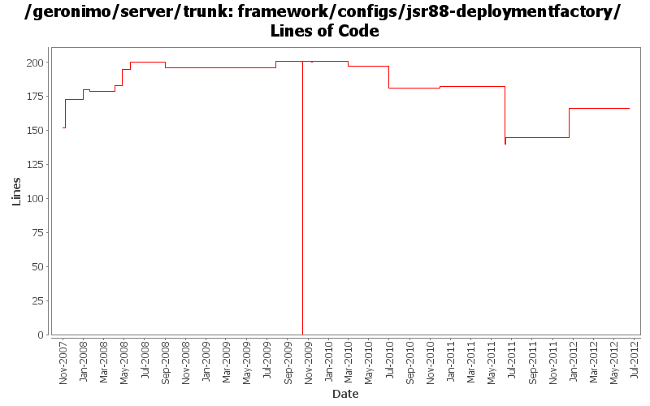

[root]/framework/configs/jsr88-deploymentfactory
 src
(0 files, 0 lines)
src
(0 files, 0 lines)
 main
(0 files, 0 lines)
main
(0 files, 0 lines)
 history
(0 files, 0 lines)
history
(0 files, 0 lines)
 plan
(1 files, 100 lines)
plan
(1 files, 100 lines)

| Author | Changes | Lines of Code | Lines per Change |
|---|---|---|---|
| Totals | 44 (100.0%) | 377 (100.0%) | 8.5 |
| djencks | 17 (38.6%) | 305 (80.9%) | 17.9 |
| jdillon | 4 (9.1%) | 29 (7.7%) | 7.2 |
| rickmcguire | 8 (18.2%) | 19 (5.0%) | 2.3 |
| xuhaihong | 3 (6.8%) | 8 (2.1%) | 2.6 |
| gawor | 3 (6.8%) | 5 (1.3%) | 1.6 |
| gdamour | 1 (2.3%) | 4 (1.1%) | 4.0 |
| rwonly | 1 (2.3%) | 2 (0.5%) | 2.0 |
| kevan | 4 (9.1%) | 2 (0.5%) | 0.5 |
| xiaming | 1 (2.3%) | 1 (0.3%) | 1.0 |
| jlaskowski | 1 (2.3%) | 1 (0.3%) | 1.0 |
| dwoods | 1 (2.3%) | 1 (0.3%) | 1.0 |
Update trunk version to 4.0.0-SNAPSHOT
1 lines of code changed in 1 file:
GERONIMO-6240 Make several base geronimo functions (kernel, deployer, etc) DS services and make the car-maven-plugin take advantage of that. Server assembly doesn't work yet, builds framework.
49 lines of code changed in 1 file:
GERONIMO-6119 upgrade geronimo-system to use commons-jexl 2.0
2 lines of code changed in 1 file:
GERONIMO-6007 Upgrade woodstox version to 4.1.1
6 lines of code changed in 1 file:
GERONIMO-6003 Remove unnecessary classpath configurations, since now Geronimo directly keeps the entry point class in the script files
0 lines of code changed in 1 file:
Comment out those classpath configurations, will remove some of them after double checking
2 lines of code changed in 1 file:
[maven-release-plugin] prepare release 3.0-M2
1 lines of code changed in 1 file:
[maven-release-plugin] prepare branch 3.0-M2
1 lines of code changed in 1 file:
GERONIMO-5702: Update for Karaf 2.1.2. Based on patch from Viola Lu
3 lines of code changed in 1 file:
Dependency updates
0 lines of code changed in 1 file:
GERONIMO-5290 fix many of the deprecation warnings from maven 3
10 lines of code changed in 1 file:
Switch to latest stax spec level
1 lines of code changed in 1 file:
Fix stax/jaxb problems when starting the framework assembly.
2 lines of code changed in 1 file:
GERONIMO-5201 Repace service versions of spec bundles with Geronimo latest versions.
8 lines of code changed in 1 file:
switch to asm 3.2 - framework builds and starts now
1 lines of code changed in 1 file:
explicitly version spec packages from the runtime jre and restore provided status of geronimo-gbean-deployer
1 lines of code changed in 1 file:
more xbeans cleanup for the tomcat plugin
5 lines of code changed in 1 file:
GERONIMO-4916 step 2 move sandbox osgi framework into trunk
201 lines of code changed in 1 file:
GERONIMO-4916 step 1 remove old framwork
0 lines of code changed in 3 files:
GERONIMO-4655 upgrade version to 3.0-SNAPSHOT, make a few things more consistent
1 lines of code changed in 1 file:
[maven-release-plugin] prepare branch 2.2
1 lines of code changed in 1 file:
GERONIMO-3003 Encrypt poassoreds and morked attributes in serialized gbeans and config.xml. Modified from patch by Jack Cai, many thanks.
5 lines of code changed in 1 file:
GERONIMO-4684, GERONIMO-4685 Use our tomcat build, configure tomcat using server.xml. Also includes some spec jar updates including using our jaxb spec jar
2 lines of code changed in 1 file:
GERONIMO-4390 Upgrade to SLF4J v1.5.5
1 lines of code changed in 1 file:
GERONIMO-4239, sort of. Use transitive depenedencies in c-m-p everywhere. This may break stuff.... let me know
2 lines of code changed in 1 file:
fixes for offline deployment (GERONIMO-4072)
1 lines of code changed in 1 file:
GERONIMO-4013 Use more maven infrastructure to figure out dependencies. Don't base c-m-p on mojo pluginsupport. Use the same dependency code to do the same work in more places
5 lines of code changed in 1 file:
(GERONIMO-3985) Use SLF4J as the primary logging facade for Geronimo
17 lines of code changed in 1 file:
*** Definition of annotations streamlining the definition of GBeanInfos.
* @GBean: optional annotation defining the name and j2eeType of a GBean.
If this annotation is not specified, then the default name is assumed to be
the class (simple) name and the default j2eeType is GBean.
* @Priority: optionalannotation defining the priority of a GBean.
* @ParamSpecial: annotation defining a GBean special attribute to be
injected.
* @ParamAttribute: annotation defining the GBean attribute to be injected.
* @ParamReference: annotation defining the GBean reference to be injected.
* @Persistent: annotation for setter methods turning the corresponding GBean
attributes into persistent attributes.
* @Reference: annotation for setter methods turning the corresponding GBean
attribute into a GBean reference.
Note that at most one constructor must be annotated with @ParamSpecial,
@ParamAttribute or @ParamReference.
*** Add a GBeanInfo factory strategy, GBeanInfoFactory, which allows us to
plug-in an annotation based GBeanInfo factory implementation.
*** Use annotation based GBeanInfo declaration for clustering related GBeans.
*** Use xbean-reflect to build GBean instances.
This fixes GERONIMO-3952 - Definition of GBeanInfo via annotations
4 lines of code changed in 1 file:
Update LICENSE and NOTICE files. Merge from 2.1 branch
0 lines of code changed in 2 files:
upgrade trunk to 2.2-SNAPSHOT
1 lines of code changed in 1 file:
GERONIMO-1761 move geronimo-util to geronimo-crypto. Still pending mv of one test directory that svn wouldn't let me move
1 lines of code changed in 1 file:
(GERONIMO-3747) Fixed parentage of module groups, though most still need to have their modules put into the proper groupId
Updated groupId of *everything* under framework/** to org.apache.geronimo.framework, and did my best to update all references
10 lines of code changed in 1 file:
(GERONIMO-3771) Moved maven-plugins/* to buildsupport/*, updated groupId to org.apache.geronimo.buildsupport
2 lines of code changed in 1 file:
Drop relativePath
0 lines of code changed in 1 file:
GERONIMO-3724 perhaps, make build work again by including deployer dependencies explicitly
1 lines of code changed in 1 file:
GERONIMO-3724 perhaps, make build work again by including deployer dependencies explicitly
7 lines of code changed in 1 file:
GERONIMO-3579 fix broken jsr88 stuff from previous mods
21 lines of code changed in 1 file:
GERONIMO-3588 Upgrade XStream to 1.2.2
1 lines of code changed in 1 file:
GERONIMO-3579 Configure which config.xml and properties files info from the plugin xml goes into
0 lines of code changed in 2 files: